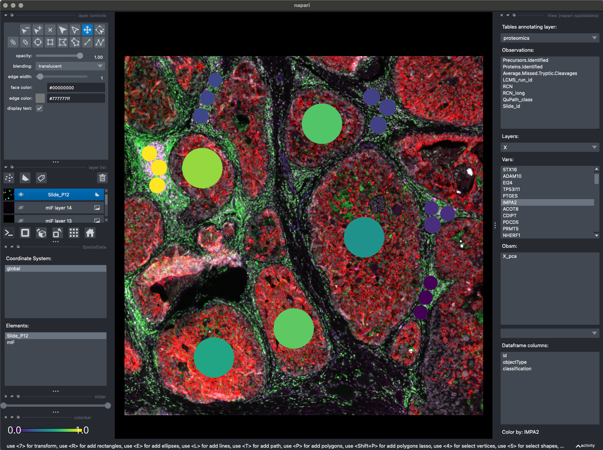
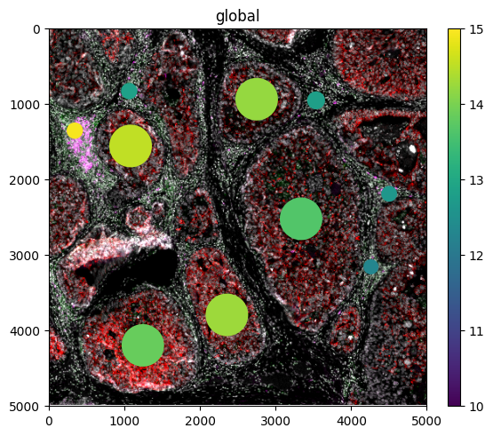

T3: Proteomics Integration#
Import necessary packages#
import opendvp as dvp
import anndata as ad
import geopandas as gpd
import ast
import spatialdata
import napari_spatialdata
from matplotlib.colors import Normalize
from dask_image import imread
print(f"openDVP version {dvp.__version__}")
openDVP version 0.6.4
Load adata from DIANN or precious tutorial#
for more details of this step go to tutorial 2.
adata = dvp.io.DIANN_to_adata(
DIANN_path="../data/proteomics/DIANN_pg_matrix.csv",
DIANN_sep="\t",
metadata_path="../data/proteomics/DIANN_metadata.csv",
metadata_sep=";",
n_of_protein_metadata_cols=4,
)
16:52:30.85 | INFO | Starting DIANN matrix shape (7030, 14)
16:52:30.85 | INFO | Removing 264 contaminants
16:52:30.86 | INFO | Filtering 3 genes that are NaN
16:52:30.86 | INFO | ['A0A0G2JRQ6_HUMAN', 'A0A0J9YY99_HUMAN', 'YJ005_HUMAN']
16:52:30.88 | INFO | 10 samples, and 6763 proteins
16:52:30.88 | INFO | 52 gene lists (eg 'TMA7;TMA7B') were simplified to ('TMA7').
16:52:30.89 | SUCCESS | Anndata object has been created :)
If you processed and stored a copy of the adata from tutorial 2, load it here like this
adata = ad.read_h5ad("../data/checkpoints/5_DAP/20250709_1322_5_DAP_adata.h5ad")
Load shapes of cut samples#
Create spatialdata object#
sdata = spatialdata.SpatialData()
SpatialData is a data framework that comprises a FAIR storage format, and a collection of python libraries for performant access, alignment, and processing of uni- and multi-modal spatial omics datasets.
Here is its documentation on how to install, use, and extend the core spatialdata library.
Main benefits for Deep Visual Proteomics users:
Standardized data format, enabling use of scverse packages.
Store all layers of information into single object, excellent for sharing and replicability.
Allows for interative and static visualization of all layers of information.
Load multiplex immunofluorescence into spatialdata object#
This is a “lazy” representation of your image. Meaning, your image data is not being loaded into memory.
This allows to create spatialdata objects that would be larger than available memory.
# first load as array using dask-image
image_array = imread.imread("../data/image/mIF.ome.tif")
image_array
|
||||||||||||||||
Here we load in into the spatialdata object we create.
We use spatialdata.models.Image2DModel.parse will ensure that our object is compatible and won’t break anything.
# load image to spatialdata object
sdata["mIF"] = spatialdata.models.Image2DModel.parse(image_array)
INFO no axes information specified in the object, setting `dims` to: ('c', 'y', 'x')
# checking it looks
sdata
SpatialData object
└── Images
└── 'mIF': DataArray[cyx] (15, 5000, 5000)
with coordinate systems:
▸ 'global', with elements:
mIF (Images)
Load proteomics matrix (adata object) to spatialdata object#
First we must label the matrix, to let spatialdata know which coordinate system to use.
In this case, this means labelling which slide it was.
adata.obs["Slide_id"] = "Slide_P12"
adata
AnnData object with n_obs × n_vars = 10 × 4637
obs: 'Precursors.Identified', 'Proteins.Identified', 'Average.Missed.Tryptic.Cleavages', 'LCMS_run_id', 'RCN', 'RCN_long', 'QuPath_class', 'Slide_id'
var: 'Protein.Group', 'Protein.Names', 'Genes', 'First.Protein.Description', 'mean', 'nan_proportions', 't_val', 'p_val', 'mean_diff', 'sig', 'p_corr', '-log10_p_corr'
uns: 'RCN_long_colors', 'filter_features_byNaNs_qc_metrics', 'impute_gaussian_qc_metrics', 'pca'
obsm: 'X_pca'
varm: 'PCs'
layers: 'unimputed'
Now we will pass the matrix to spatialdata.
We need to tell spatialdata what parts of the adata object to use for visualization:
regionis which set of shapes to project these data into, in this caseSlide_P12.region_keyis which column in adata.obs to use for finding theregionparameter.instance_keyrefers to the column that links this adata object to the shapes.
We use QuPath_class because that is the column that matches between the adata and the geodataframe.
sdata["proteomics"] = spatialdata.models.TableModel.parse(
adata=adata, region="Slide_P12", region_key="Slide_id", instance_key="QuPath_class"
)
This step is confusing, maybe checking Spatialdata documentation helps, otherwise contact us!
sdata
SpatialData object
├── Images
│ └── 'mIF': DataArray[cyx] (15, 5000, 5000)
└── Tables
└── 'proteomics': AnnData (10, 4637)
with coordinate systems:
▸ 'global', with elements:
mIF (Images)
Load the geodataframe with shapes that match proteomic samples (aka LMD annotations)#
gdf = gpd.read_file("../data/proteomics/collection_shapes.geojson")
gdf.head()
| id | objectType | classification | geometry | |
|---|---|---|---|---|
| 0 | 78422794-3ed4-4e09-a9aa-6486c467149d | annotation | { "name": "P12_Immune_3", "color": [ 0, 255, 2... | POLYGON ((3417 955.5, 3417.23 962.94, 3417.93 ... |
| 1 | 70a57ffd-50a0-4449-b873-2dd2a38bf190 | annotation | { "name": "P12_Immune_3", "color": [ 0, 255, 2... | POLYGON ((3547 715.5, 3547.23 722.94, 3547.93 ... |
| 2 | edfda1ca-8de8-44f5-af4e-f16e15bcd4ca | annotation | { "name": "P12_Immune_3", "color": [ 0, 255, 2... | POLYGON ((3324 568.5, 3324.23 575.94, 3324.93 ... |
| 3 | a0a868c6-c7e3-4fb0-8f4f-071454565080 | annotation | { "name": "P12_Immune_4", "color": [ 0, 255, 2... | POLYGON ((4398 2191.5, 4398.21 2198.06, 4398.8... |
| 4 | ce97d787-321e-4b7d-97e7-55b203fb0373 | annotation | { "name": "P12_Immune_4", "color": [ 0, 255, 2... | POLYGON ((4173 2349, 4173.22 2356.16, 4173.9 2... |
Here we see that the QuPath class name is inside that classification column.
Let’s get it out
gdf["QuPath_class"] = gdf["classification"].apply(
lambda row: ast.literal_eval(row).get("name") if isinstance(row, str) else row.get("name")
)
# this line of code says, if classification cells are strings,
# convert to a dictionary and get name attribute,
# otherwise we assume it is already a dictionary and we get the name attribute.
gdf.head()
| id | objectType | classification | geometry | QuPath_class | |
|---|---|---|---|---|---|
| 0 | 78422794-3ed4-4e09-a9aa-6486c467149d | annotation | { "name": "P12_Immune_3", "color": [ 0, 255, 2... | POLYGON ((3417 955.5, 3417.23 962.94, 3417.93 ... | P12_Immune_3 |
| 1 | 70a57ffd-50a0-4449-b873-2dd2a38bf190 | annotation | { "name": "P12_Immune_3", "color": [ 0, 255, 2... | POLYGON ((3547 715.5, 3547.23 722.94, 3547.93 ... | P12_Immune_3 |
| 2 | edfda1ca-8de8-44f5-af4e-f16e15bcd4ca | annotation | { "name": "P12_Immune_3", "color": [ 0, 255, 2... | POLYGON ((3324 568.5, 3324.23 575.94, 3324.93 ... | P12_Immune_3 |
| 3 | a0a868c6-c7e3-4fb0-8f4f-071454565080 | annotation | { "name": "P12_Immune_4", "color": [ 0, 255, 2... | POLYGON ((4398 2191.5, 4398.21 2198.06, 4398.8... | P12_Immune_4 |
| 4 | ce97d787-321e-4b7d-97e7-55b203fb0373 | annotation | { "name": "P12_Immune_4", "color": [ 0, 255, 2... | POLYGON ((4173 2349, 4173.22 2356.16, 4173.9 2... | P12_Immune_4 |
Now we see that the QuPath_class column has our matching names.
One last thing we must do, is set these names as the index of the geodataframe.
gdf = gdf.set_index("QuPath_class")
gdf.head()
| id | objectType | classification | geometry | |
|---|---|---|---|---|
| QuPath_class | ||||
| P12_Immune_3 | 78422794-3ed4-4e09-a9aa-6486c467149d | annotation | { "name": "P12_Immune_3", "color": [ 0, 255, 2... | POLYGON ((3417 955.5, 3417.23 962.94, 3417.93 ... |
| P12_Immune_3 | 70a57ffd-50a0-4449-b873-2dd2a38bf190 | annotation | { "name": "P12_Immune_3", "color": [ 0, 255, 2... | POLYGON ((3547 715.5, 3547.23 722.94, 3547.93 ... |
| P12_Immune_3 | edfda1ca-8de8-44f5-af4e-f16e15bcd4ca | annotation | { "name": "P12_Immune_3", "color": [ 0, 255, 2... | POLYGON ((3324 568.5, 3324.23 575.94, 3324.93 ... |
| P12_Immune_4 | a0a868c6-c7e3-4fb0-8f4f-071454565080 | annotation | { "name": "P12_Immune_4", "color": [ 0, 255, 2... | POLYGON ((4398 2191.5, 4398.21 2198.06, 4398.8... |
| P12_Immune_4 | ce97d787-321e-4b7d-97e7-55b203fb0373 | annotation | { "name": "P12_Immune_4", "color": [ 0, 255, 2... | POLYGON ((4173 2349, 4173.22 2356.16, 4173.9 2... |
Now we see that QuPath_class is the index.
Spatialdata needs this to match the proteomics adata object to these shapes.
Let’s add these prepared shapes to the spatialdata object.
sdata["Slide_P12"] = spatialdata.models.ShapesModel.parse(gdf)
Now we have three pieces of information, all linked and ready to be visualized
sdata
SpatialData object
├── Images
│ └── 'mIF': DataArray[cyx] (15, 5000, 5000)
├── Shapes
│ └── 'Slide_P12': GeoDataFrame shape: (20, 4) (2D shapes)
└── Tables
└── 'proteomics': AnnData (10, 4637)
with coordinate systems:
▸ 'global', with elements:
mIF (Images), Slide_P12 (Shapes)
Write spatialdata object for future use#
sdata.write("../outputs/spatialdata.zarr")
INFO The Zarr backing store has been changed from None the new file path: ../outputs/spatialdata.zarr
sdata = spatialdata.read_zarr("../outputs/spatialdata.zarr")
Visualize data interactively#
This should open a napari instance
napari_spatialdata.Interactive(sdata)
<napari_spatialdata._interactive.Interactive at 0x2d7fe19d0>
{kind=link}

Here you can see the interactive spatialdata viewer.
We overlay the mIF signal, with any of our proteomic values.
We can also overlay any value dounf in adata.obs!
# we need this because of a spatialdata bug, see https://github.com/scverse/spatialdata-plot/issues/475
sdata["Slide_P12"] = sdata["Slide_P12"][~sdata["Slide_P12"].index.duplicated(keep="first")]
sdata.pl.render_images(
element="mIF",
channel=[4, 6, 7, 11],
norm=Normalize(vmin=3, vmax=75, clip=False),
palette=["white", "green", "red", "magenta"],
).pl.render_shapes(
element="Slide_P12",
table_name="proteomics",
color="IMPA2",
cmap="viridis",
norm=Normalize(vmin=10, vmax=15, clip=False),
).pl.show()
INFO Rasterizing image for faster rendering.
